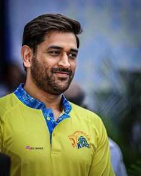
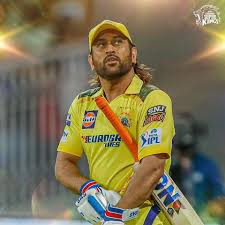
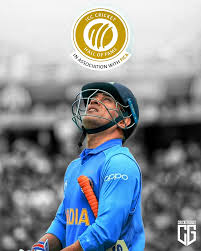

Mahendra Singh Dhoni, captured here in the iconic yellow jersey of the Chennai Super Kings (CSK), remains a legendary figure in world cricket. Known affectionately as "Captain Cool," he is celebrated for his astute leadership and calm demeanor under intense pressure. As the only captain to win three major ICC trophies—the 2007 T20 World Cup, the 2011 Cricket World Cup, and the 2013 Champions Trophy—Dhoni's legacy is defined by his ability to finish games and his exceptional wicket-keeping skills.Mahendra Singh Dhoni, captured here in the iconic yellow jersey of the Chennai Super Kings (CSK), remains a legendary figure in world cricket. Known affectionately as "Captain Cool," he is celebrated for his astute leadership and calm demeanor under intense pressure. As the only captain to win three major ICC trophies—the 2007 T20 World Cup, the 2011 Cricket World Cup, and the 2013 Champions Trophy—Dhoni's legacy is defined by his ability to finish games and his exceptional wicket-keeping skills. Mahendra Singh Dhoni, captured here in the iconic yellow jersey of the Chennai Super Kings (CSK), remains a legendary figure in world cricket. Known affectionately as "Captain Cool," he is celebrated for his astute leadership and calm demeanor under intense pressure. As the only captain to win three major ICC trophies—the 2007 T20 World Cup, the 2011 Cricket World Cup, and the 2013 Champions Trophy—Dhoni's legacy is defined by his ability to finish games and his exceptional wicket-keeping skills. Mahendra Singh Dhoni, captured here in the iconic yellow jersey of the Chennai Super Kings (CSK), remains a legendary figure in world cricket. Known affectionately as "Captain Cool," he is celebrated for his astute leadership and calm demeanor under intense pressure. As the only captain to win three major ICC trophies—the 2007 T20 World Cup, the 2011 Cricket World Cup, and the 2013 Champions Trophy—Dhoni's legacy is defined by his ability to finish games and his exceptional wicket-keeping skills.In the Indian Premier League (IPL), Dhoni has led CSK to five titles, making them one of the most successful franchises in the league's history. His connection with the team and its fans, often referred to as "Thala," is deeply rooted in his long-standing association with the jersey number 7, a number so synonymous with him that it was retired by the BCCI in 2023 as an honor. Even as his role has evolved, his presence continues to be a cornerstone for CSK, both as a player and a mentor.
Mahendra Singh Dhoni, affectionately known as "Mahi" or "Thala," is widely regarded as one of the greatest cricket captains, wicket-keepers, and finishers in the history of the sport. Born on July 7, 1981, in Ranchi, Bihar (now Jharkhand), Dhoni's journey from a railway ticket collector to a global cricket icon is an inspiring tale of resilience, dedication, and unorthodox genius. As a captain, he redefined leadership with his "Captain Cool" demeanor, remaining unflappable under intense pressure, which allowed him to mentor young talent and build a culture of self-belief within the Indian team. He is the only captain in international cricket history to win all three major ICC limited-overs tournaments: the 2007 ICC World Twenty20, the 2011 ICC Cricket World Cup, and the 2013 ICC Champions Trophy. Furthermore, he successfully led India to the top of the ICC Test rankings in 2009.Dhoni's batting style was a blend of immense power and unconventional technique, characterized by his signature "helicopter shot" and an unparalleled ability to finish matches in high-pressure situations, often taking the game into the final over. His sharp reflexes behind the stumps set new benchmarks for wicket-keeping in India. In the Indian Premier League (IPL), Dhoni has been synonymous with the Chennai Super Kings (CSK), leading them to five titles (2010, 2011, 2018, 2021, and 2023) and establishing them as one of the most successful franchises. Beyond his professional achievements, he is revered for his humility, patriotism, and love for motorcycles. After retiring from international cricket on August 15, 2020, he remains a key figure in the IPL, his legacy as a tactical mastermind and a game-changer securely etched in the hearts of millions of fans worldwide.

In the start of his career, he was quite an aggressive batsman. He was known for hitting big sixes, especially his helicopter shot. It was quite entertaining to watch him play, because at that time it was quite unconventional to see Indian batsmen play so aggressively. He even contributed as a wicket keeper. In 2007, he was given a chance to lead the team in the first ICC T20 world cup. We got a chance to see his brilliance as a captain in that tournament, in which he led the team to victory. He then went on to become the captain across all formats. One of his greatest achievement was winning the 2011 ODI world cup. Memories of the final match still bring goosebumps. It was against Sri Lanka. They had set a respectable target to chase. India lost two early wickets. People had almost lost their hopes after the third wicket. In this pressure situation, M.S Dhoni promoted himself up the batting order. He stayed at the crease to score a total of 91 runs. He won the match for India with a six. That moment was quite an inspirational one for me. The way, he handled that situation is nothing less than a life lesson for me. Even after hitting that winning six he had calm on his face. But the nation just went crazy that night. India had won after 28 years. He is not only known for his cricket skills, but also for his personality. He is popularly known as ‘Captain Cool’. He had a calm state of mind in all situations, whether favourable or unfavourable. He reacted to both victory and loss in the same way. For him, cricket was not only a physical sport, but a mind game as well, which was quite evident from how he used to set up the field as a wicket-keeper. Besides this, he acted as a mentor for many young players, who went to become an important part of the team. I learnt many life lessons from M.S. Dhoni and that too in such an entertaining way. I wish to to attain a calm state of mind, just like him.